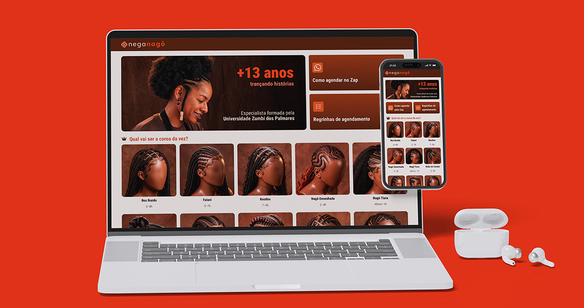
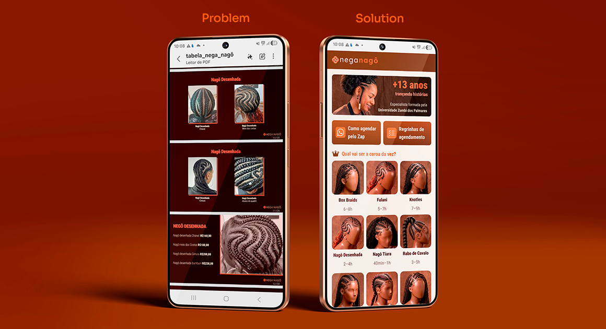
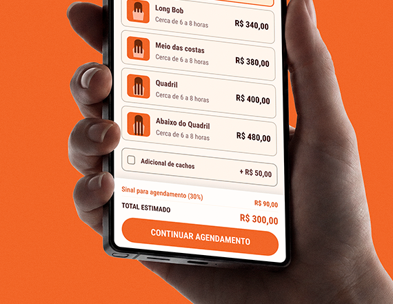
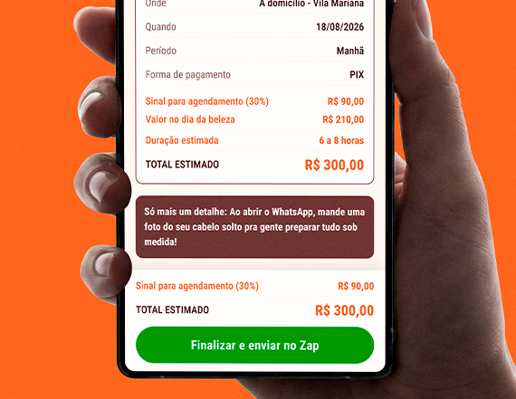
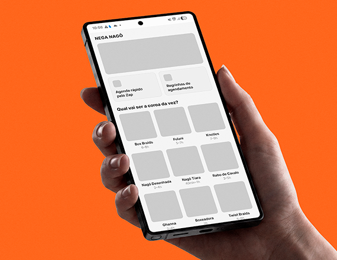
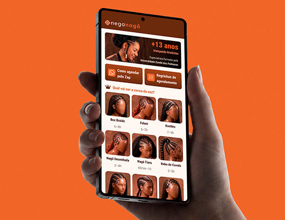
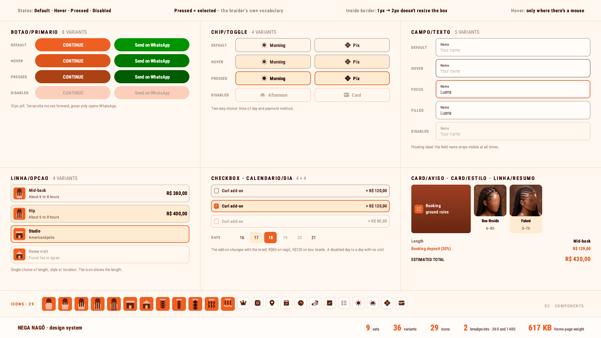
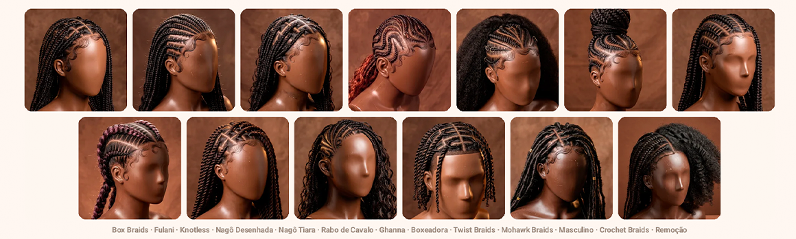
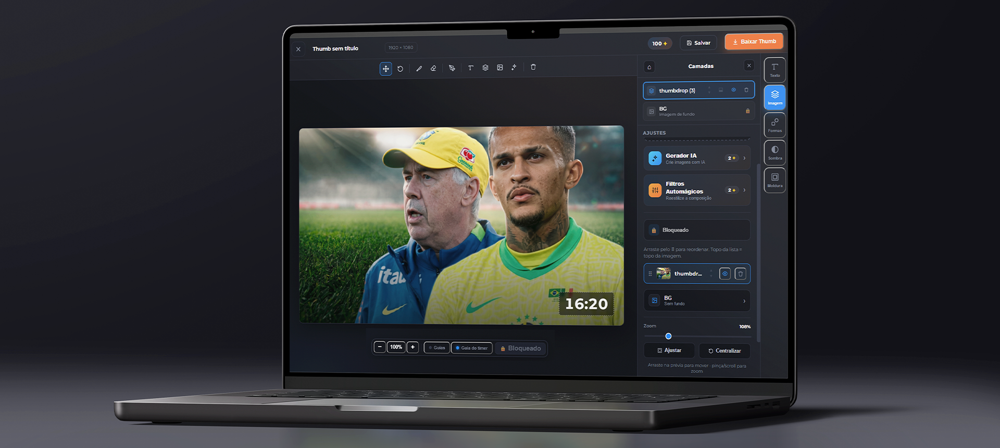

Projeto real · produto, design e código
Redesenho do catálogo de uma trancista para acabar com a conversa de ida e volta e transformar interesse em agendamento sem sair do WhatsApp.

A Nega Nagô trança há treze anos em São Paulo. O catálogo dela era um print. Fiz a pesquisa, o desenho das telas, o design system e o código que entrega tudo isso.
- Cliente
- Nega Nagô trancista · São Paulo
- Papel
- Product designer e design engineer
- Entregas
- Pesquisa · UI · design system front-end · handoff
- Feito com
- Claude ⇄ Figma via MCP HTML, CSS e JS · Playwright Higgsfield · Nano Banana 2
- Período
- 2026 · entregue
01 · O problema
A tabela cabia numa foto. A decisão, não.
Treze categorias de trança e mais de quarenta combinações de tamanho e preço, tudo em texto corrido dentro de uma imagem enviada no direct.
A cliente abria o print, não achava o preço do tamanho que queria e perguntava. A Mayara respondia entre um atendimento e outro, às vezes horas depois. Cada pergunta virava uma conversa de ida e volta antes de existir qualquer agendamento.
O problema não era a tabela estar errada. Era ela exigir uma segunda pessoa para ser lida.
13
categorias de trança
40+
combinações de tamanho e preço
16
agendamentos por mês, na média
1
canal, respondido entre um cliente e outro

02 · Antes e depois
Seis passos com espera viraram três sem espera
O mesmo objetivo — agendar uma trança — pelos dois caminhos. O que sai não é tela: é o tempo morto entre a dúvida e a resposta.
Como era
Cliente pede a tabela no direct
Recebe um print com 40+ preços
Não acha o tamanho que quer
Pergunta
Espera a resposta entre um atendimento e outro
Fecha — ou desiste no meio
Os passos 3, 4 e 5 dependem da agenda da Mayara. É onde o interesse esfria.
Como ficou
Escolhe o estilo e o tamanho, com preço e sinal na tela
Preenche dia, período e — se for a domicílio — o endereço
Envia a mensagem já escrita no WhatsApp
Nenhum passo espera resposta. A Mayara entra na conversa com tudo já decidido.


03 · Restrições
Quase toda decisão de tela veio de uma restrição do negócio
Nenhuma dessas escolhas saiu de intuição de UX. Saíram de como ela cobra, de onde a cliente já está e do que o piloto podia bancar.
Restrição
Ela compra o material antes de cada atendimento.
O que impõe
Sem adiantamento, o dinheiro sai do bolso dela.
Como virou tela
O sinal de 30% aparece calculado em toda tela de preço, junto do total. Nunca no fim, como surpresa.
Restrição
A cliente já está no WhatsApp quando decide.
O que impõe
Levar ela para um checkout fora dali cria mais um lugar para desistir.
Como virou tela
O fluxo termina dentro do WhatsApp. O site escreve a mensagem inteira; ela só aperta enviar.
Restrição
O adicional custa diferente conforme a família de trança.
O que impõe
Um valor único estaria errado em metade do catálogo.
Como virou tela
Um campo addon por estilo. Cachos a R$ 80 nas nagô, R$ 120 nas box braids, jumbo a R$ 120 no masculino. Quem não tem a opção não vê o campo.
Restrição
Ela atende no estúdio e a domicílio.
O que impõe
Endereço só faz sentido num dos dois casos.
Como virou tela
O bloco de endereço só existe na tela quando "a domicílio" está marcado — com busca por CEP ou rua, e confirmação antes de seguir.
Restrição
Sem gateway de pagamento no piloto.
O que impõe
O site não pode cobrar nada.
Como virou tela
O site calcula e informa; a cobrança acontece na conversa. A mensagem já sai com a divisão exata: sinal agora, resto no dia.
O fluxo não é o desenho ideal. É o desenho que cabe no jeito que ela já trabalha.
Cada linha da tabela acima é uma decisão que eu não tomaria olhando só para a tela.
04 · Pesquisa
Quatro pessoas, duas rodadas. A primeira sem cor nenhuma.
Testei em dois momentos separados de propósito. Primeiro um HTML de rascunho em tons de cinza — sem cor, sem logo, sem foto. Só o caminho. Depois o protótipo com a identidade inteira.
Rodada 1
Cinza, só o fluxo
Dá para chegar ao fim? A informação aparece na hora que a pessoa precisa dela? Sem identidade visual, o que sobra na tela é a estrutura — e é ela que está sendo testada.
Rodada 2
Protótipo completo
O encantamento veio aqui, como era de esperar. A diferença é que ele estava sentado em cima de um fluxo que já tinha andado sozinho, sem cor para carregar.
Por que separar
Testar tudo junto mistura duas perguntas. Se a pessoa gostou, foi do fluxo ou da marca? Em cinza a resposta não tem para onde fugir.


Quem testou
Escolhi quatro perfis para cobrir o funil inteiro, em vez de quem estivesse à mão. As quatro fazem ou já fizeram tranças em outros lugares e passaram por vários jeitos de agendar — link, tabela em PDF, conversa solta no direct. Não estavam comparando com nada: estavam comparando com o que já usaram.
01
Cliente recorrente
Já agenda com a Mayara e sabe os preços de cor. Serve para ver se o fluxo atrapalha quem já tem o caminho na cabeça.
02
Consultou e não fechou
Pediu preço e não voltou. É exatamente o perfil que o projeto existe para recuperar.
03
Contratou uma vez
Conhece o serviço mas não virou hábito. Mostra o que falta para a segunda vez acontecer sozinha.
04
Nunca contratou
Chega sem referência nenhuma — nem de preço, nem de vocabulário. É quem revela o que a tela precisa explicar sozinha.
4/4
chegaram ao fim do agendamento sem que eu explicasse como funciona
4/4
escolheram exatamente o que queriam, sem hesitar no meio
4/4
apontaram como a melhor experiência de compra entre as que já usaram
2
rodadas: rascunho em cinza e protótipo completo
O elogio que mais se repetiu
Não foi sobre beleza. Foi sobre saber quanto ia custar.
A conta recalcula a cada toque. Muda o tamanho, muda o adicional, muda o local — o total e o sinal mudam junto, na mesma tela, sem precisar avançar para descobrir. A cliente sai sabendo quanto vai adiantar agora e quanto sobra para o dia.
Quando ela chega para fechar, nada daquilo é novidade. E o que não é novidade não vira objeção.
É a primeira restrição da seção anterior fechando o ciclo. A Mayara compra o material antes, então precisa dos 30% adiantados. Essa trava do negócio é o que virou o elogio mais repetido da pesquisa — a limitação virou o argumento.
05 · A entrega
O botão final não abre um checkout. Abre a conversa já escrita.
Esta é a saída real do produto — o texto que a cliente envia, gerado a partir do que ela escolheu. É o único artefato que sai do site e chega na Mayara.
Por que texto, e não formulário
A Mayara não vai abrir um painel entre um atendimento e outro. Ela vive no WhatsApp. A mensagem chega no lugar onde ela já responde, com a divisão de valores pronta para conferir.
O vocabulário é o dela
A tela chama o penteado de coroa, não de "serviço" nem de "item". É a palavra que ela e as clientes usam. O sistema se adaptou ao vocabulário, não o contrário.
Oi, Nega Nagô! Vim pelo site e quero agendar 💛 *Nagô Desenhada* — Meio das costas Duração estimada: cerca de 2 a 4 horas Adicional de cachos: sim (+ R$ 80,00) *Meus dados* Nome: Luana Local: A domicílio Endereço: Rua Tenente Ary Aps, 123 — Apto 42 Dia: 14 de setembro Período: Manhã *Valores* Total estimado: R$ 290,00 Sinal agora (30%): R$ 87,00 via Pix No dia da beleza: R$ 203,00 Já vou mandar a foto do meu cabelo solto!
Saída real do protótipo, gerada em enviarZap().
A última linha já oferece a foto do cabelo solto, que a trancista precisa ver para estimar o trabalho. É uma ida e volta a menos.
06 · Método
O ciclo fecha nos dois sentidos. O Figma não é o fim da linha.
Quase todo fluxo de IA em design anda numa direção só: ou gera tela a partir de prompt, ou gera código a partir do design. Aqui a estrutura sai do Claude para o Figma via MCP, evolui como design de verdade, e volta para o Claude virar o HTML que está no ar.
Estratégia e UX
Antes de qualquer tela: o problema, o fluxo, o vocabulário da trancista, a tabela de preços inteira e as restrições do negócio. Sai escrito, não desenhado.
Decisão minha · o que entra e o que fica de fora
Claude → Figma
A estrutura vira frame, componente e token dentro do arquivo, sem eu redesenhar à mão o que já estava decidido.
Baixa → média → alta → protótipo
É aqui que o design acontece. Quatro níveis de fidelidade, cada um resolvendo uma pergunta diferente — e é a versão de baixa, em cinza, que foi para a primeira rodada de teste.
Decisão minha · hierarquia, ritmo, estados, identidade
Figma → Claude
O protótipo final volta como fonte da verdade — geometria, cor e texto lidos do arquivo, não descritos de memória.
HTML publicado
O código que está no ar. E, depois dele, a suíte que compara o resultado de volta contra o Figma por medição — o mesmo ciclo, agora como controle de qualidade.
Decisão minha · o que é fiel e o que precisa ceder
Por que a volta importa
Num fluxo de mão única, o arquivo do Figma morre no handoff: vira imagem de referência que desatualiza no primeiro ajuste de código. Fechando o ciclo, ele continua sendo a fonte — e a suíte de medição prova, número a número, que o que está no ar é o que está no arquivo.
Onde a IA não decide
Ela move artefato entre etapas e executa o que já foi definido. As três decisões que sustentam este projeto — o sinal na tela, o fim dentro do WhatsApp, o vocabulário da trancista — saíram de conversa com a Mayara e de teste com quatro pessoas, não de prompt.
O mesmo método, no ramo das imagens
Nenhuma foto existia. A direção criativa saiu no Claude, a partir de referências reais, e virou um contrato visual escrito — manequim, ângulo, fundo, luz, matiz alvo. Cada prompt é esse contrato com uma linha trocada. A geração foi no Higgsfield com o Nano Banana 2.
Claude
Direção criativa e prompts
Higgsfield · Nano Banana 2
Geração das 13 imagens
Pillow · WebP
Três recortes por estilo
A seção 09 mostra o resultado e a medição que prova a coerência entre as treze fotos.
07 · Design system
Um sistema pequeno, documentado inteiro
Nove conjuntos de componentes, 36 variantes, 29 ícones e dois breakpoints. Os nomes das variáveis no Figma são os mesmos nomes das custom properties no CSS.
#d3602a
#592812
#fff8f1
#ffead3
#f1cebd
#2d9404

Os de catálogo — tamanho, modelo, local — são coloridos e viram ilustração dentro
das linhas de opção. Os de interface herdam currentColor, então mudam de cor junto
do estado do componente.
9
conjuntos de componentes
36
variantes documentadas
29
ícones desenhados
14
páginas no Figma, do briefing ao handoff
08 · Engenharia
Comparei o código contra o Figma por medição, não a olho
Escrevi uma suíte em Playwright que abre o protótipo nos dois breakpoints e lê o valor computado de cada gap, largura e altura. Quatro erros que pareciam certos na tela apareceram assim.
1fr → minmax(0,1fr)
medido 112 / 108 / 83 px → 101 / 104 px
No grid do catálogo, o nome mais longo — "Nagô Desenhada" — esticava a própria coluna e espremia as vizinhas. Na tela passava por diferença de foto. Era o track dimensionado pelo conteúdo.
Margem automática cancelando o stretch
hero medida 615 × 493 → 847 × 360
O container usava margin:0 auto dentro de um pai em flex. Margem
automática num filho flex cancela o stretch, então a hero encolhia até o tamanho do conteúdo
em vez de ocupar o breakpoint. Só apareceu porque eu estava comparando números com o Figma.
[hidden] perdendo para a classe
4 lugares corrigidos de uma vez
O bloco de endereço recebia o atributo hidden corretamente, mas
.end{display:flex} ganhava do padrão do navegador e ele continuava visível.
Uma linha — [hidden]{display:none!important} — consertou também três outros
lugares que estavam quebrados em silêncio.
Modo escuro invertendo a marca
18 propriedades comparadas · 0 diferença
Abri no meu celular, que fica em modo noturno, e a paleta da marca estava toda
trocada. O Android repinta por conta páginas que não declaram esquema de cor.
color-scheme:light mais a meta tag travaram. Verifiquei rodando o mesmo teste
com o navegador em modo escuro e comparando 18 propriedades computadas antes e depois.
Um arquivo, sem framework
HTML, CSS e JavaScript num arquivo só. Nada para instalar, nada para buildar, nada para quebrar quando uma dependência sobe de versão. Para um piloto de uma pessoa, isso é a escolha certa.
617 KB a Home inteira
Com as treze fotos carregadas. Converti as 46 imagens de PNG para WebP e o conjunto caiu de 17 MB para 1,9 MB. A cliente abre no 4G, não no wi-fi do escritório.
A suíte roda o fluxo inteiro
Mede gaps, simula o arraste do carrossel com eventos de ponteiro, intercepta a API de CEP com resposta falsa e percorre agendamento até o botão final — nos dois breakpoints, a cada mudança.
09 · Catálogo de imagens
Nenhuma foto existia. Dirigi e gerei as 13.
Não havia sessão, modelo nem banco de imagem que servisse. Fechei um contrato visual — manequim, ângulo, fundo, luz, matiz — usei o Claude para escrever os prompts a partir dele e gerei no Higgsfield com o Nano Banana 2.

A coerência dá para medir
Amostrei os quatro cantos de cada foto e converti para matiz. Os treze fundos caem entre 12,4° e 19,2° — amplitude de 6,8° em treze gerações independentes. O terracota da marca é 19,2°, o marrom é 18,6°.
Não foi sorte: o matiz alvo estava escrito no prompt. A prova pelo contrário está no mesmo dado — a luminosidade, que eu não pedi como número, abriu de 35% a 56%.
Cor média do fundo, uma amostra por estilo, na ordem do catálogo
Quando a Mayara fotografar de verdade, cada foto entra no lugar de uma, com os mesmos nomes de arquivo. Nada no código muda.
10 · Números
O que o projeto mudou, e como cada número foi apurado
Os números do produto qualquer pessoa reproduz rodando a suíte. Os da operação vieram da agenda da Mayara, comparando o antes e o depois do lançamento.
Abra o repositório e rode a suíte: todos saem iguais.
617 KB
peso da Home completa, com as treze fotos
17 MB → 1,9 MB
as 46 imagens, depois da conversão para WebP
6,8°
amplitude de matiz do fundo nas treze fotos de produto
36
variantes de componente documentadas no Figma
3
telas para sair do catálogo com a mensagem pronta
0
erros de console em 360 px e 1400 px
Da agenda dela, não de modelo. O intervalo de confiança e o valor-p foram calculados sobre os agendamentos observados antes e depois do lançamento.
16
agendamentos por mês antes do lançamento
40
agendamentos por mês depois
2,50×
razão de taxas · IC 95% 1,37–4,78 · p = 0,0018 binomial condicional exato
11 · Em aberto
O que eu não resolvi
Agenda ainda não é real
Os dias ocupados estão fixos no código. Integrar a Google Agenda da Mayara é o próximo passo, e é o que separa um protótipo de uma ferramenta que ela usa toda semana.
Busca de endereço testada só com resposta falsa
O ambiente onde desenvolvi bloqueia as APIs de CEP e de mapa. A busca funciona contra respostas simuladas e tem queda controlada para entrada manual, mas ainda precisa de um teste contra a rede real.
As imagens de IA ainda não estão identificadas na tela
São renders de referência, não portfólio da Mayara. Está escrito nesta página, mas precisa estar escrito no produto — que já está no ar com cliente. É a pendência mais urgente da lista.
Quatro pessoas acham o problema grande, não o de cauda
A amostra foi escolhida com cuidado, mas continua pequena. Quatro sessões pegam o que trava todo mundo; não pegam o caso raro que aparece na centésima cliente. Com o fluxo agora em operação, dá para observar uso real em vez de sessão marcada — é o próximo passo da pesquisa.
12 · Mais
Outros projetos

ThumbDrop
Ferramenta interna que tirou a thumbnail da fila do time de design. Duas rodadas de teste, IA dentro do editor e o tempo por thumb caindo de seis para três minutos.

CT em Campo
Uma ativação de Copa que não cabia no template do portal. Superfície dedicada, design system, motion e front-end — com o patrocinador dividindo tela com ninguém.
Disponível para trabalhar
Desenho, escrevo o código e digo o que não deu certo.
Treze anos de design, cinco deles na Canaltech entre design system, marketing e comercial. Se você tem uma superfície que precisa sair pronta e medida, e não especificada, me chama.
© 2026 Erick Teixeira
oerickteixeira@gmail.com · São Paulo